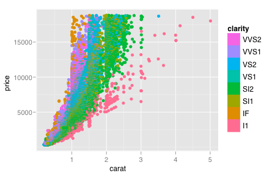
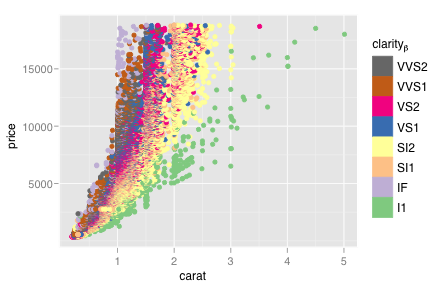
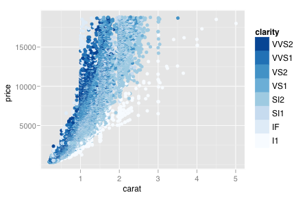
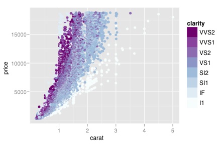
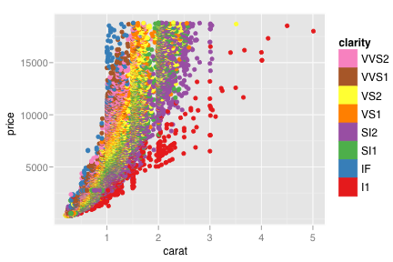
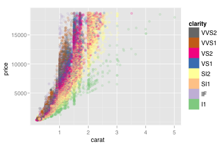
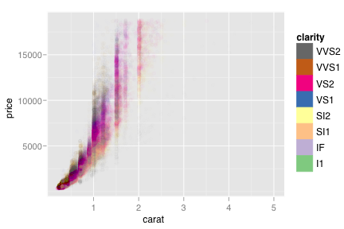
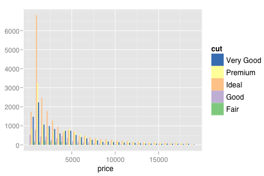

scale_brewer
Colour brewer colour scales
Details
Examples
> (d <- qplot(carat, price, data=diamonds, colour=clarity))  > > # Change scale label > d + scale_colour_brewer() > d + scale_colour_brewer("clarity") > d + scale_colour_brewer(expression(clarity[beta]))  > > # Select brewer palette to use, see ?brewer.pal for more details > d + scale_colour_brewer(type="seq")  > d + scale_colour_brewer(type="seq", palette=3)  > > display.brewer.all(n=8, exact.n=FALSE) > > d + scale_colour_brewer(palette="Blues") > d + scale_colour_brewer(palette="Set1")  > > # One way to deal with overplotting - use transparency > # (only works with pdf, quartz and cairo devices) > d + scale_colour_brewer(alpha = 0.2)  > d + scale_colour_brewer(alpha = 0.01)  > > # scale_fill_brewer works just the same as > # scale_colour_brewer but for fill colours > ggplot(diamonds, aes(x=price, fill=cut)) +geom_bar(position="dodge") +()  src "\n"